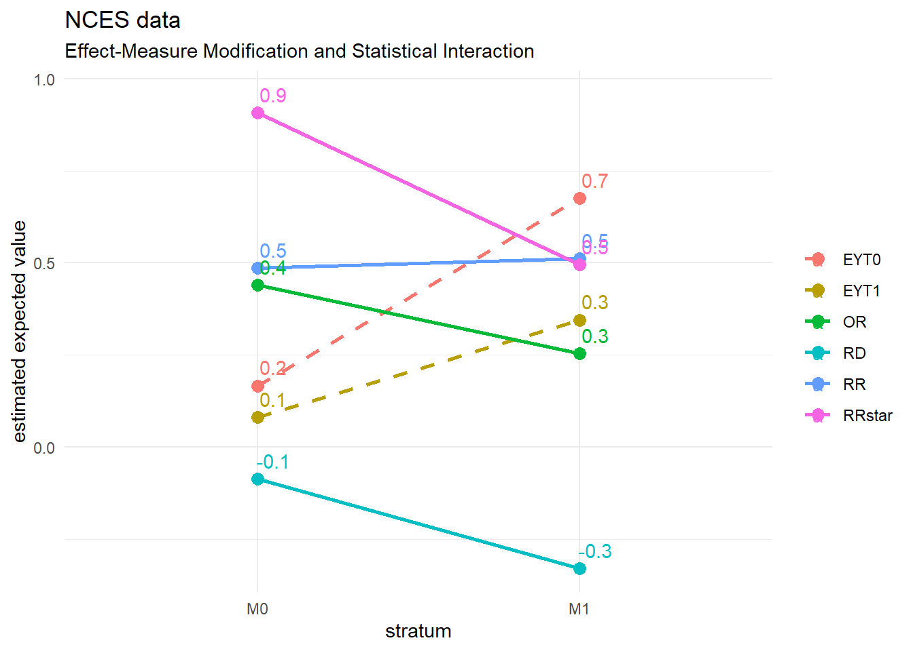
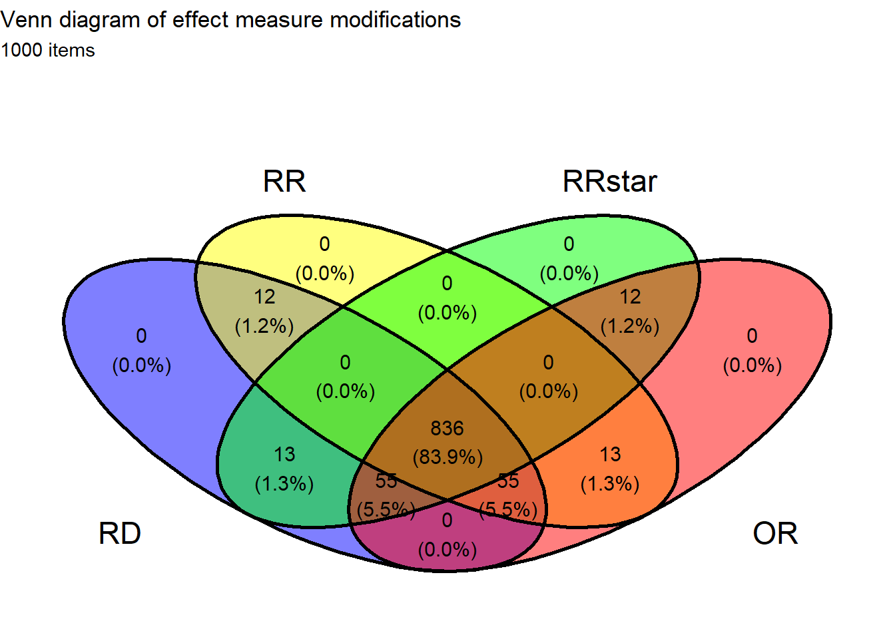
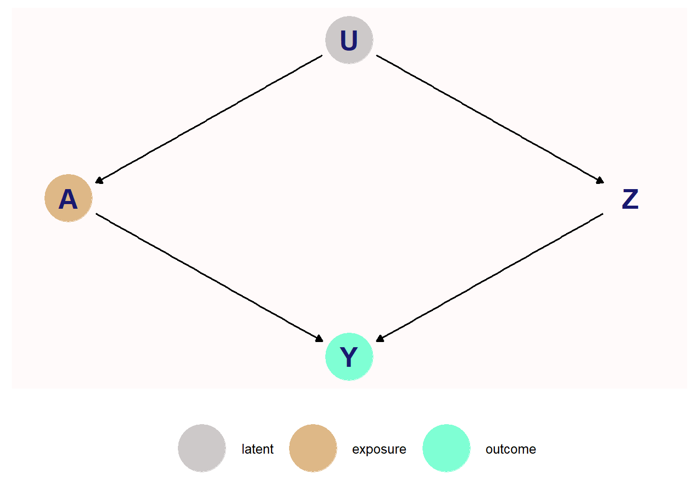
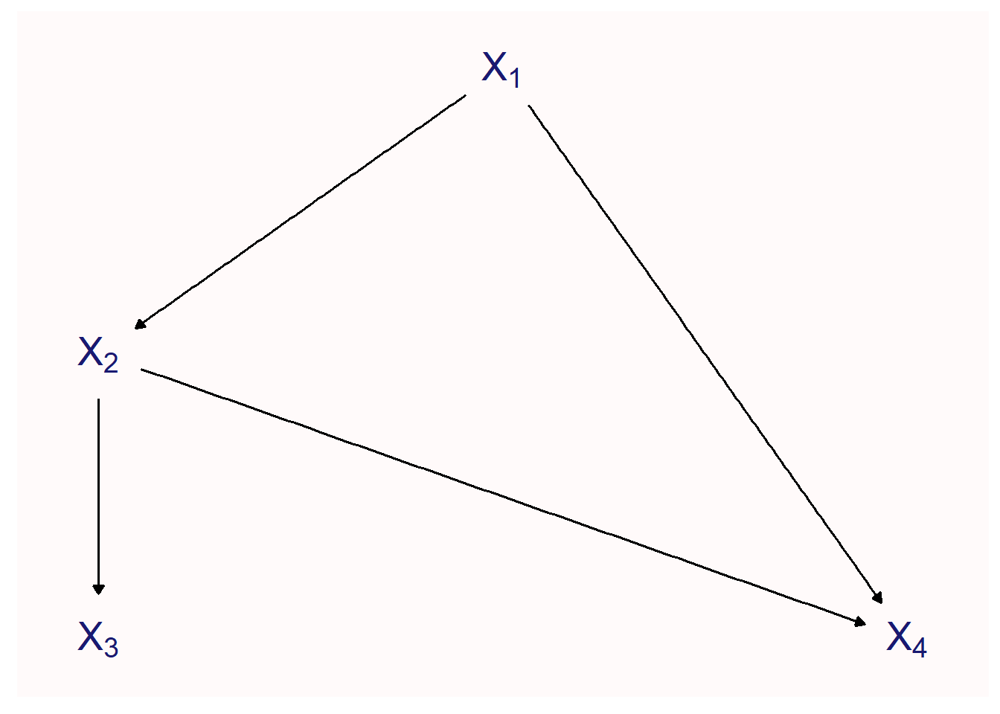
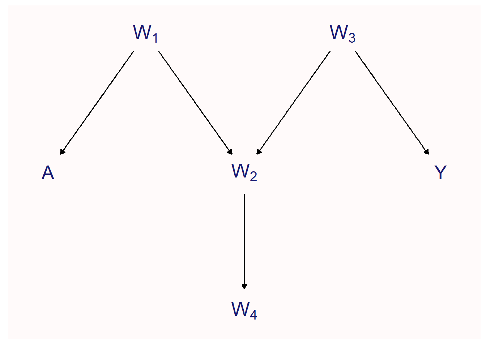
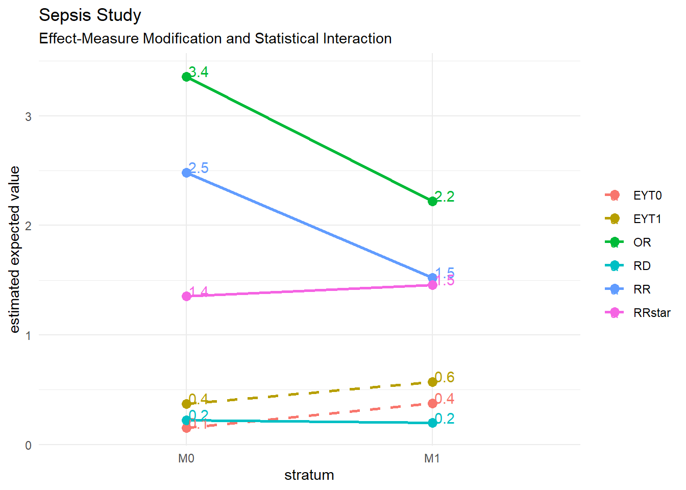
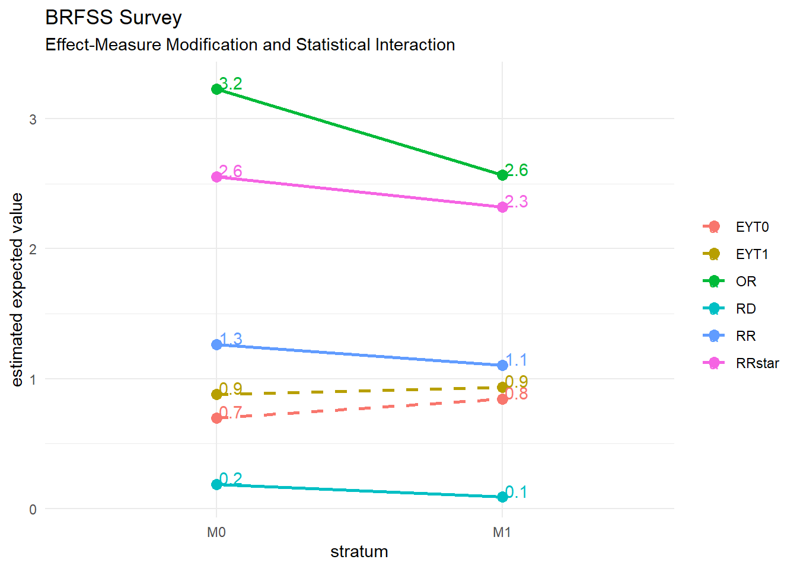

Chapter 4 Effect-Measure Modification and Causal Interaction
4.1 Effect-Measure Modification and Statistical Interaction
4.1.1 RECOVERY trial
Create the data.frame for RECOVERY trial
recovery <- expand.grid(Y = 0:1, `T` = 0:1, M = 0:1)
recovery$n <- as.integer(c(787, 2851, 368, 1412, 278, 405, 86, 238))
recovery <- lapply(X = seq_len(nrow(recovery)), FUN = function(i) {
data.frame(
M = rep(recovery$M[i], recovery$n[i]),
`T` = rep(recovery$`T`[i], recovery$n[i]),
Y = rep(recovery$Y[i], recovery$n[i])
)
})
recovery <- do.call(rbind, recovery)
# create an id variable for use with gee() later
recovery$id <- seq_len(nrow(recovery))boot.r <- function(dat, formula = Y ~ `T` + M, R = 1000, conf = 0.95) {
# IMPORTANT:
# The formula must always be in form Y ~ `T` + M, that is with only
# 2 predictors: T as the treatment variable and M as the modifier
# variable
# the name of the response variable
y <- all.vars(formula[[2]])
# the name of the treatment variable
t <- all.vars(formula[[3]])[1]
# the name of the modifier variable
m <- all.vars(formula[[3]])[2]
bootinside.r <- function(data, ids) {
dat <- data[ids, ]
# estimate the expected potential outcomes
EYT0.M0 <- mean(dat[dat[, t] == 0 & dat[, m] == 0, y])
EYT0.M1 <- mean(dat[dat[, t] == 0 & dat[, m] == 1, y])
EYT1.M0 <- mean(dat[dat[, t] == 1 & dat[, m] == 0, y])
EYT1.M1 <- mean(dat[dat[, t] == 1 & dat[, m] == 1, y])
# estimate the effect measures
RD.M0 <- EYT1.M0 - EYT0.M0
RD.M1 <- EYT1.M1 - EYT0.M1
logRR.M0 <- log(EYT1.M0 / EYT0.M0)
logRR.M1 <- log(EYT1.M1 / EYT0.M1)
logRRstar.M0 <- log((1 - EYT0.M0) / (1 - EYT1.M0))
logRRstar.M1 <- log((1 - EYT0.M1) / (1 - EYT1.M1))
logOR.M0 <- logRR.M0 + logRRstar.M0
logOR.M1 <- logRR.M1 + logRRstar.M1
# the effect measure difference
EYT0.diff <- EYT0.M1 - EYT0.M0
EYT1.diff <- EYT1.M1 - EYT1.M0
RD.diff <- RD.M1 - RD.M0
logRR.diff <- logRR.M1 - logRR.M0
logRRstar.diff <- logRRstar.M1 - logRRstar.M0
logOR.diff <- logOR.M1 - logOR.M0
out <- c(EYT0.M0, EYT0.M1, EYT1.M0, EYT1.M1, RD.M0, RD.M1,
logRR.M0, logRR.M1, logRRstar.M0, logRRstar.M1,
logOR.M0, logOR.M1, EYT0.diff, EYT1.diff,
RD.diff, logRR.diff, logRRstar.diff, logOR.diff)
names(out) <- c("EYT0.M0", "EYT0.M1", "EYT1.M0", "EYT1.M1", "RD.M0", "RD.M1",
"logRR.M0", "logRR.M1", "logRRstar.M0", "logRRstar.M1",
"logOR.M0", "logOR.M1", "EYT0.diff", "EYT1.diff",
"RD.diff", "logRR.diff", "logRRstar.diff", "logOR.diff")
out
}
# estimate bootstrap confidence intervals and point estimate
boot.out <- boot::boot(data = dat, statistic = bootinside.r, R = R)
# extract the estimated values and confidence intervals from the boot object
out <- sapply(X = seq_along(boot.out$t0), FUN = function(i) {
est <- boot.out$t0[i]
ci <- boot::boot.ci(boot.out, conf = conf, type = "norm", index = i)$normal
out <- c(est, ci)
names(out) <- c("est", "conf", "lci", "uci")
out
})
# create the dataframe to hold the results
out <- data.frame(t(out))
# add the first column as the names of the results
out <- data.frame(name = names(boot.out$t0), out)
# convert link to natural scales and add to output
sel <- c("RR.M0" = "logRR.M0", "RR.M1" = "logRR.M1", "RR.diff" = "logRR.diff",
"RRstar.M0" = "logRRstar.M0", "RRstar.M1" = "logRRstar.M1", "RRstar.diff" = "logRRstar.diff",
"OR.M0" = "logOR.M0", "OR.M1" = "logOR.M1", "OR.diff" = "logOR.diff")
df <- out[match(sel, out$name), ]
df <- as.data.frame(sapply(X = df[, c("est", "lci", "uci")], FUN = exp))
df <- cbind(name = names(sel), conf = conf, df)
out <- rbind(out, df)
out
}run boot.r() with the RECOVERY data set
recovery.out <- boot.r(recovery, formula = Y ~ `T` + M)verify the results with the author’s on p. 65.
bb <- data.frame(
name = c("EYT0.M0", "EYT0.M1", "EYT1.M0", "EYT1.M1", "RD.M0", "RD.M1",
"EYT0.diff", "EYT1.diff", "RD.diff", "RR.M0", "RR.M1", "RR.diff",
"RRstar.M0", "RRstar.M1", "RRstar.diff", "OR.M0", "OR.M1", "OR.diff"),
est = c(0.784, 0.593, 0.793, 0.735, 0.01, 0.142,
-0.191, -0.059, 0.132, 1.012, 1.239, 1.224,
1.046, 1.533, 1.466, 1.059, 1.9, 1.794)
)
comp <- data.frame(bb = bb,
d = recovery.out[match(bb$name, recovery.out$name), "est"])
comp$dev <- abs(comp$bb.est - comp$d)
stopifnot(sum(comp$dev) < 0.01)and we communicate the results in a table
# we create a function for the table as it will be used again
# later in this chapter
tbl_boot.r <- function(df, title = "Effect Measures and CI",
subtitle = "Effect-measure Modification") {
# prepare the dataframe to create the table
df <- df %>%
filter(!grepl(pattern = "log.+", name)) %>%
select(-conf) %>%
tidyr::pivot_longer(cols = c(est, lci, uci), names_to = "point", values_to = "value") %>%
tidyr::separate(col = "name", into = c("name", "stratum"), sep = "[.]") %>%
tidyr::unite(col = "estimate", stratum, point, sep = "_") %>%
pivot_wider(names_from = "estimate", values_from = "value")
# create the table with gt
gt::gt(df, rowname_col = "name") %>%
tab_header(title = md(paste0("**", title, "**")),
subtitle = md(paste0("**", subtitle, "**"))) %>%
tab_spanner_delim(delim = "_", columns = everything(), split = "last") %>%
fmt_number(columns = everything(), decimals = 2) %>%
cols_align(align = "center", columns = everything()) %>%
opt_row_striping() %>%
tab_style(
style = cell_borders(sides = "left", color = "grey60",
weight = px(1.5), style = "solid"),
locations = cells_body( columns = c("M1_est", "diff_est"))
) %>%
tab_style(
style = cell_borders(sides = "left", color = "grey60",
weight = px(1.5), style = "solid"),
locations = cells_column_labels(columns = c("M1_est", "diff_est"))
) %>%
tab_options(
heading.title.font.weight = "bold",
heading.subtitle.font.weight = "bold",
heading.background.color = "gainsboro",
column_labels.font.weight = "bold")
}
tbl_boot.r(recovery.out, title = "Table 4.2 RECOVERY Trial")| Table 4.2 RECOVERY Trial | |||||||||
|---|---|---|---|---|---|---|---|---|---|
| Effect-measure Modification | |||||||||
| M0 | M1 | diff | |||||||
| est | lci | uci | est | lci | uci | est | lci | uci | |
| EYT0 | 0.78 | 0.77 | 0.80 | 0.59 | 0.55 | 0.63 | −0.19 | −0.23 | −0.15 |
| EYT1 | 0.79 | 0.78 | 0.81 | 0.73 | 0.69 | 0.78 | −0.06 | −0.11 | −0.01 |
| RD | 0.01 | −0.01 | 0.03 | 0.14 | 0.08 | 0.20 | 0.13 | 0.07 | 0.20 |
| RR | 1.01 | 0.98 | 1.04 | 1.24 | 1.13 | 1.36 | 1.22 | 1.11 | 1.35 |
| RRstar | 1.05 | 0.94 | 1.17 | 1.53 | 1.25 | 1.87 | 1.47 | 1.16 | 1.84 |
| OR | 1.06 | 0.92 | 1.22 | 1.90 | 1.43 | 2.52 | 1.79 | 1.29 | 2.47 |
plotting the results makes it easier to see the measures vary among the strata. We can clearly see here significant difference in effect measures between the 2 strata.
It supports the observation in the text concerning the lack of effect of dexamethasone without intrusive mechanical ventilation (M0) vs its use with intrusive mechanical ventilation (M1) which is significant.
# we create a function for the plot as it will be used
# again later in this chapter
plot_boot.r <- function(df, title = "Change in effect measures") {
# preapre the dataframe used to pcreate the plot
df <- df %>%
filter(!grepl(pattern = "log.+", name)) %>%
select(-conf) %>%
tidyr::separate(col = "name", into = c("name", "stratum"), sep = "[.]") %>%
filter(stratum != "diff")
# create the plot
ggplot(df,
aes(x = stratum, y = est, color = name, linetype = name, group = name)) +
geom_line(size = 1) +
geom_point(mapping = aes(fill = name), size = 3, shape = 21) +
geom_text(mapping = aes(label = round(est, 1)),
nudge_x = 0.05, nudge_y = 0.05) +
scale_linetype_manual(values = c("EYT0" = "dashed", "EYT1" = "dashed",
"OR" = "solid", "RD" = "solid",
"RR" = "solid", "RRstar" = "solid")) +
theme_minimal() +
theme(legend.position = "right",
legend.title = element_blank()) +
labs(title = title,
subtitle = "Effect-Measure Modification and Statistical Interaction",
y = "estimated expected value")
}plot_boot.r(recovery.out, title = "RECOVERY trial")
The gee::gee() function is used to find information on the coefficients
and see if they are statistically significant. The same could be done
withe glm::glm() but gee offers results with robust statistics which
is very useful in practical terms.
Luckily, the gee() works exactly like the glm() functions, with the same
extractor functions coefficients(), effects(), etc. See the documentation
of lm with ?lm for more details.
We are going through an example just below to illustrate how tthe extractor functions are used which is not shown in the textbook.
linmod <- gee::gee(Y ~ `T` + M + `T` * M,
id = id,
data = recovery,
family = gaussian)## Beginning Cgee S-function, @(#) geeformula.q 4.13 98/01/27## running glm to get initial regression estimate## (Intercept) T M T:M
## 0.78367235 0.00958608 -0.19070017 0.13200964summary(linmod)##
## GEE: GENERALIZED LINEAR MODELS FOR DEPENDENT DATA
## gee S-function, version 4.13 modified 98/01/27 (1998)
##
## Model:
## Link: Identity
## Variance to Mean Relation: Gaussian
## Correlation Structure: Independent
##
## Call:
## gee::gee(formula = Y ~ T + M + T * M, id = id, data = recovery,
## family = gaussian)
##
## Summary of Residuals:
## Min 1Q Median 3Q Max
## -0.7932584 0.2067416 0.2163277 0.2163277 0.4070278
##
##
## Coefficients:
## Estimate Naive S.E. Naive z Robust S.E. Robust z
## (Intercept) 0.78367235 0.006975704 112.3431253 0.006826403 114.8001855
## T 0.00958608 0.012170195 0.7876686 0.011778554 0.8138588
## M -0.19070017 0.017545664 -10.8687918 0.019999408 -9.5352906
## T:M 0.13200964 0.030881745 4.2746820 0.033074076 3.9913327
##
## Estimated Scale Parameter: 0.1770267
## Number of Iterations: 1
##
## Working Correlation
## [,1]
## [1,] 1To extract the coefficients from the gee object we use the extractor function
coefficients() or its alias coef()
coef(linmod)## (Intercept) T M T:M
## 0.78367235 0.00958608 -0.19070017 0.13200964and to extract the entire coefficient data to work
with it, just use coefficients() with summary()
coef(summary(linmod))## Estimate Naive S.E. Naive z Robust S.E. Robust z
## (Intercept) 0.78367235 0.006975704 112.3431253 0.006826403 114.8001855
## T 0.00958608 0.012170195 0.7876686 0.011778554 0.8138588
## M -0.19070017 0.017545664 -10.8687918 0.019999408 -9.5352906
## T:M 0.13200964 0.030881745 4.2746820 0.033074076 3.9913327and in this case we are concerned about how significant the interaction is.
Therefore the Robust z is extracted with coefficients() alias coef()
coef(summary(linmod))[, "Robust z"]## (Intercept) T M T:M
## 114.8001855 0.8138588 -9.5352906 3.9913327we see that \(T:M\) is 3.99 standard deviations away from zero which will give us the 2-sided p-value that is significant
z <- coef(summary(linmod))["T:M", "Robust z"]
2 * (1 - pnorm(z))## [1] 6.570304e-054.1.2 NCES
We process the NCES data the same way we did for the RECOVERY trial.
Run the bootsrap
nces.out <- boot.r(nces, formula = highmathsat ~ female + selective)verify the results with the author’s on p. 70.
bb <- data.frame(
name = c("EYT0.M0", "EYT0.M1", "EYT1.M0", "EYT1.M1", "RD.M0", "RD.M1",
"EYT0.diff", "EYT1.diff", "RD.diff", "RR.M0", "RR.M1", "RR.diff",
"RRstar.M0", "RRstar.M1", "RRstar.diff", "OR.M0", "OR.M1", "OR.diff"),
est = c(0.167, 0.675, 0.081, 0.345, -0.086, -0.33,
0.509, 0.264, -0.244, 0.486, 0.511, 1.052,
0.907, 0.496, 0.547, 0.44, 0.254, 0.576)
)
comp <- data.frame(bb = bb, d = nces.out[match(bb$name, nces.out$name), "est"])
comp$dev <- abs(comp$bb.est - comp$d)
stopifnot(sum(comp$dev) < 0.01)and the table is
tbl_boot.r(nces.out, title = "Table 4.3 NCES data")| Table 4.3 NCES data | |||||||||
|---|---|---|---|---|---|---|---|---|---|
| Effect-measure Modification | |||||||||
| M0 | M1 | diff | |||||||
| est | lci | uci | est | lci | uci | est | lci | uci | |
| EYT0 | 0.17 | 0.14 | 0.20 | 0.68 | 0.61 | 0.75 | 0.51 | 0.43 | 0.59 |
| EYT1 | 0.08 | 0.06 | 0.11 | 0.35 | 0.25 | 0.44 | 0.26 | 0.16 | 0.37 |
| RD | −0.09 | −0.12 | −0.05 | −0.33 | −0.45 | −0.21 | −0.24 | −0.37 | −0.12 |
| RR | 0.49 | 0.34 | 0.71 | 0.51 | 0.38 | 0.70 | 1.05 | 0.65 | 1.67 |
| RRstar | 0.91 | 0.87 | 0.95 | 0.50 | 0.38 | 0.64 | 0.55 | 0.42 | 0.71 |
| OR | 0.44 | 0.30 | 0.67 | 0.25 | 0.15 | 0.44 | 0.58 | 0.29 | 1.11 |
and we plot the results
plot_boot.r(nces.out, title = "NCES data")
We observe that
- RD: Risk difference shows that using selection to accept more women seem to decrease the % of school with hogh math SAT
- OR and RRstar: Show the same results as RD
- RR: Indicates that selection, in relative terms has no significant effect
4.2 Qualitative Agreement of Effect Measures in Modification
This section relies heavily on the paper from Shannin and Brumback (2021) Jake Shannin (2021). It used a Monte-Carlo simulation in java by jake running 1000000 times for six effect measures (the 4 in this chapter, the hazard ratio HR and the recovery ration HR*).
For the purpose of this project we only simulate the 4 effect measures
discussed so far (RD, RR, RR* and OR). We use R package MonteCarlo with 5000
repetitions. The distribution used for simulation is the beta distribution
which is generally used for values in [0,1]. It is also used as a prior of
binomial regression in Bayes analysis which is the subject covered a little
later in this section. Regardless if the 6 effects measures from Jake Shannin (2021)
or the 4 from Brumback (2022) are used, the process and conclusion are the
same.
We point out that using the distribution \(Beta(1, 1) \sim Uniform(0, 1)\) is equivalent to running a grid search. It is also equivalent to the uniform distribution used in Jake Shannin (2021).
4.2.1 Algorithm
# This is a Monte Carlo simulation using the beta distribution
betasim_effect_measures <- function(shape1_prms = 1, shape2_prms = 1, nrep = 5000,
constrained = FALSE) {
stopifnot(nrep >= 1)
# the shape parameters must be >= 0.5 to maintain
# the positivity assumption
stopifnot(all(shape1_prms >= 0.5), all(shape2_prms >= 0.5))
# the function used by Monte Carlo for each parameter in the grid
calc_measures <- function(shape1, shape2) {
# get the random sample from beta distribution
s <- rbeta(n = 4, shape1 = shape1, shape2 = shape2)
EY_T0_M0 <- s[1]
EY_T1_M0 <- s[2]
EY_T0_M1 <- s[3]
EY_T1_M1 <- s[4]
# IMPORTANT: Make sure the positivity assumption is met.
stopifnot(EY_T0_M0 > 0, EY_T0_M0 < 1, EY_T1_M0 > 0, EY_T1_M0 < 1,
EY_T0_M1 > 0, EY_T0_M1 < 1, EY_T1_M1 > 0, EY_T1_M1 < 1)
# compute the effect measures
RD0 <- EY_T1_M0 - EY_T0_M0
RD1 <- EY_T1_M1 - EY_T0_M1
RR0 <- EY_T1_M0 / EY_T0_M0
RR1 <- EY_T1_M1 / EY_T0_M1
RR0star <- (1 - EY_T0_M0) / (1 - EY_T1_M0)
RR1star <- (1 - EY_T0_M1) / (1 - EY_T1_M1)
OR0 <- RR0 * RR0star
OR1 <- RR1 * RR1star
# How did the measures change with the modifier?
RD <- sign(RD1 - RD0)
RR <- sign(RR1 - RR0)
RRstar <- sign(RR1star - RR0star)
OR <- sign(OR1 - OR0)
# We want to know if the various subsets of the four causal measures would
# agree (i.e. change together from one stratum to the other)
# 1 pair only
RD_RR <-
(RD == RR) & (RD != RRstar) & (RD != OR) &
(RR != RRstar) & (RR != OR) & (RRstar != OR)
RD_RRstar <-
(RD != RR) & (RD == RRstar) & (RD != OR) &
(RR != RRstar) & (RR != OR) & (RRstar != OR)
RD_OR <-
(RD != RR) & (RD != RRstar) & (RD == OR) &
(RR != RRstar) & (RR != OR) & (RRstar != OR)
RR_RRstar <-
(RD != RR) & (RD != RRstar) & (RD != OR) &
(RR == RRstar) & (RR != OR) & (RRstar != OR)
RR_OR <-
(RD != RR) & (RD != RRstar) & (RD != OR) &
(RR != RRstar) & (RR == OR) & (RRstar != OR)
RRstar_OR <-
(RD != RR) & (RD != RRstar) & (RD != OR) &
(RR != RRstar) & (RR != OR) & (RRstar == OR)
# 2 pairs not being 3-wise
# called "Opposite pairwise events"
RD_RR_vs_RRstar_OR <-
(RD == RR) & (RD != RRstar) & (RD != OR) &
(RR != RRstar) & (RR != OR) & (RRstar == OR)
RD_RRstar_vs_RR_OR <-
(RD != RR) & (RD == RRstar) & (RD != OR) &
(RR != RRstar) & (RR == OR) & (RRstar != OR)
RD_OR_vs_RR_RRstar <-
(RD != RR) & (RD != RRstar) & (RD == OR) &
(RR == RRstar) & (RR != OR) & (RRstar != OR)
# 3-wise
RD_RR_RRstar <-
(RD == RR) & (RD == RRstar) & (RD != OR) &
(RR == RRstar) & (RR != OR) & (RRstar != OR)
RD_RR_OR <-
(RD == RR) & (RD != RRstar) & (RD == OR) &
(RR != RRstar) & (RR == OR) & (RRstar != OR)
RD_RRstar_OR <-
(RD != RR) & (RD == RRstar) & (RD == OR) &
(RR != RRstar) & (RR != OR) & (RRstar == OR)
RR_RRstar_OR <-
(RD != RR) & (RD != RRstar) & (RD != OR) &
(RR == RRstar) & (RR == OR) & (RRstar == OR)
# 4-wise
RD_RR_RRstar_OR <-
(RD == RR) & (RD == RRstar) & (RD == OR) &
(RR == RRstar) & (RR == OR) & (RRstar == OR)
# All measures move in different directions
# This is an impossible event and represent the empty set
NONE <-
(RD != RR) & (RD != RRstar) & (RD != OR) &
(RR != RRstar) & (RR != OR) & (RRstar != OR)
# create the output list
out <- list("RD_RR" = RD_RR, "RD_RRstar" = RD_RRstar, "RD_OR" = RD_OR,
"RR_RRstar" = RR_RRstar, "RR_OR" = RR_OR, "RRstar_OR" = RRstar_OR,
"RD_RR_vs_RRstar_OR" = RD_RR_vs_RRstar_OR,
"RD_RRstar_vs_RR_OR" = RD_RRstar_vs_RR_OR,
"RD_OR_vs_RR_RRstar" = RD_OR_vs_RR_RRstar,
"RD_RR_RRstar" = RD_RR_RRstar, "RD_RR_OR" = RD_RR_OR,
"RD_RRstar_OR" = RD_RRstar_OR, "RR_RRstar_OR" = RR_RRstar_OR,
"RD_RR_RRstar_OR" = RD_RR_RRstar_OR, "NONE" = NONE)
# if constrained and condition is met, set to NA
# is constrained the set to NA
# if RR0 and RR1 are on different side of 1
# then the constraint is met
cond <- sign(RR0 - 1) != sign(RR1 - 1)
if (constrained & cond) out[seq_along(out)] <- NA
out
}
# run parametric Monte Carlo simulation
params <- list("shape1" = shape1_prms, "shape2" = shape2_prms)
mc.out <- MonteCarlo(func = calc_measures, nrep = nrep, param_list = params)
# output the results. One matrix per event where every matrix element
# is a percentage frequency for given shape1 and shape2 parameters
out <- lapply(mc.out$results, FUN = function(x) {
m <- sapply(
X = seq_len(dim(x)[1]), FUN = function(s1) {
sapply(X = seq_len(dim(x)[2]), function(s2) {
# since the constrained items are set to NA, we must
# remove NA from the calculations, only has an effect
# when constrained = TRUE
nb <- sum(!is.na(x[s1, s2, ]))
sum(x[s1, s2, ], na.rm = TRUE) / nb
})
})
# Convert array to matrix and name row and columns
m <- as.matrix(m)
rownames(m) <- paste("s2", shape2_prms, sep = "=")
colnames(m) <- paste("s1", shape1_prms, sep = "=")
m
})
out
}4.2.2 Simulate the effect measures
We run the Monte-Carlo simulation without constraint and with \(Beta(1,1)\) which is equivalent to \(Uniform(0,1)\) used by Jake Shannin (2021).
message("this takes 1 sec.: we load a saved file instead")## this takes 1 sec.: we load a saved file insteadstartTime <- Sys.time()
# gridsim <- betasim_effect_measures(shape1 = 1, shape2 = 1, nrep = 5000)
a_file <- file.path(dir_data, "chap04_gridsim.rds")
# saveRDS(gridsim, file = a_file)
gridsim <- readRDS(file = a_file)
endTime <- Sys.time()
# print(endTime - startTime)which gives the vector of percentages
unlist(gridsim)## RD_RR RD_RRstar RD_OR RR_RRstar
## 0.0000 0.0000 0.0000 0.0000
## RR_OR RRstar_OR RD_RR_vs_RRstar_OR RD_RRstar_vs_RR_OR
## 0.0000 0.0000 0.0282 0.0272
## RD_OR_vs_RR_RRstar RD_RR_RRstar RD_RR_OR RD_RRstar_OR
## 0.0000 0.0000 0.0572 0.0538
## RR_RRstar_OR RD_RR_RRstar_OR NONE
## 0.0000 0.8336 0.0000For the following discussion, we must note the following about the vector of percentages returned by the simulation.
- Pairwise events: Some measures move as 1 pair in the same direction while
all the other pairs move in different direction between each other.
These are 6 possibilities named
RD_RR,RD_RRstar,RD_OR,RR_RRstar,RR_OR,RRstar_OR. - Opposite pairwise events: Some measures move as 2 pairs but
each of the 2 pairs does not move in the same direction.
There are 3 possibilities, called
RD_RR_vs_RRstar_OR,RD_RRstar_vs_RR_ORandRD_OR_vs_RR_RRstar. These are the problematic ones as they cannot be represented in the Venn diagram of section 4.2. However we can distribute them to ensure probabilities add up to 1. For exampleRD_RR_vs_RRstar_ORwill be split 50% between pairwise eventsRD_RRand 50% to pairwise eventRRstar_OR. This enforces the very important rule that probabilities must add up to 1 without consequences on the conclusions reached. - 3-wise events: Some 3 measures move in the same direction together There are 4 possibilities
called
RD_RR_RRstar,RD_RR_OR,RD_RRstar_ORandRR_RRstar_OR. - All events: Sometimes all measures move together.
This is the possibility of interest discussed by Shannin and Brumback (2021).
This possibility is called
ALL. - No event: The possibility
NONEconcerns the event that no pair of measures move in the same direction. It is impossible and represents the empty set \(\emptyset\) which is one of the 3 conditions of a \(\sigma-field\). - Validation: The sum of the vector’s elements must be one.
The event definitions above ensure that the sample space is actually a \(\sigma-field\). See Geoffrey R. Grimmet (2001), section 1.2.
then we compare with the author’s results
bb <- c("RD_RR" = 0.026, "RD_RRstar" = 0.026, "RD_OR" = 0,
"RR_RRstar" = 0, "RR_OR" = 0.026, "RRstar_OR" = 0.026,
"RD_RR_vs_RRstar_OR" = 0,
"RD_RRstar_vs_RR_OR" = 0,
"RD_OR_vs_RR_RRstar" = 0,
"RD_RR_RRstar" = 0, "RD_RR_OR" = 0.057,
"RD_RRstar_OR" = 0.057, "RR_RRstar_OR" = 0,
"RD_RR_RRstar_OR" = 0.833, "NONE" = 0)
comp <- data.frame(bb = round(bb, 4), sim = round(unlist(gridsim), 4))
comp## bb sim
## RD_RR 0.026 0.0000
## RD_RRstar 0.026 0.0000
## RD_OR 0.000 0.0000
## RR_RRstar 0.000 0.0000
## RR_OR 0.026 0.0000
## RRstar_OR 0.026 0.0000
## RD_RR_vs_RRstar_OR 0.000 0.0282
## RD_RRstar_vs_RR_OR 0.000 0.0272
## RD_OR_vs_RR_RRstar 0.000 0.0000
## RD_RR_RRstar 0.000 0.0000
## RD_RR_OR 0.057 0.0572
## RD_RRstar_OR 0.057 0.0538
## RR_RRstar_OR 0.000 0.0000
## RD_RR_RRstar_OR 0.833 0.8336
## NONE 0.000 0.0000The results from the Monte Carlo simulation above confirm the main conclusion from Jake Shannin (2021) that all effect measures move together 84% of the time.
c("simulation" = unname(unlist(gridsim["RD_RR_RRstar_OR"])),
"author's" = unname(bb["RD_RR_RRstar_OR"]))## simulation author's
## 0.8336 0.8330We note that the sim adds up correctly to 1 but not the author’s which adds up to 1.051. This is explained on p. 72 as a bit of arbitrary allocations. The Jake Shannin (2021) paper (caption figure 1) mentions that they do not add to 1 because they include events that are not mutually exclusive.
c("simulation" = sum(unlist(gridsim)), "author's" = sum(bb))## simulation author's
## 1.000 1.051Actually, this is caused by the Opposite pairwise events which cannot be represented in the 4-set Venn diagram. For the purpose of this books we will simply split them between the events that makes them up without consequence on the conclusion.
The Opposite pairwise events are the following
# The events that pair of measures move together but in opposite
# direction of another pair who also move together
unlist(gridsim[c("RD_RR_vs_RRstar_OR", "RD_RRstar_vs_RR_OR", "RD_OR_vs_RR_RRstar")])## RD_RR_vs_RRstar_OR RD_RRstar_vs_RR_OR RD_OR_vs_RR_RRstar
## 0.0282 0.0272 0.0000and when we split them between their 2 sub-events we can generate the Venn diagram as follows
# This is a custom function using the venn package
venn_sim(gridsim, n = 1000,
fill_colr = c("blue", "yellow", "green", "red"),
title = "Venn diagram of effect measure modifications")
now for constrained data
message("this takes 1 sec.: we load a saved file instead")## this takes 1 sec.: we load a saved file insteadstartTime <- Sys.time()
# gridsim_const <- betasim_effect_measures(shape1 = 1, shape2 = 1, nrep = 5000,
# constrained = TRUE)
a_file <- file.path(dir_data, "chap04_gridsim_const.rds")
# saveRDS(gridsim_const, file = a_file)
gridsim_const <- readRDS(file = a_file)
endTime <- Sys.time()
# print(endTime - startTime)which gives the vector of percentages
unlist(gridsim_const)## RD_RR RD_RRstar RD_OR RR_RRstar
## 0.0000000 0.0000000 0.0000000 0.0000000
## RR_OR RRstar_OR RD_RR_vs_RRstar_OR RD_RRstar_vs_RR_OR
## 0.0000000 0.0000000 0.0486166 0.0541502
## RD_OR_vs_RR_RRstar RD_RR_RRstar RD_RR_OR RD_RRstar_OR
## 0.0000000 0.0000000 0.1177866 0.1158103
## RR_RRstar_OR RD_RR_RRstar_OR NONE
## 0.0000000 0.6636364 0.0000000and comparing to the author’s results
bb_const <- c("RD_RR" = 0.053, "RD_RRstar" = 0.053, "RD_OR" = 0.053,
"RR_RRstar" = 0, "RR_OR" = 0.053, "RRstar_OR" = 0.0,
"RD_RR_vs_RRstar_OR" = 0,
"RD_RRstar_vs_RR_OR" = 0,
"RD_OR_vs_RR_RRstar" = 0,
"RD_RR_RRstar" = 0, "RD_RR_OR" = 0.114,
"RD_RRstar_OR" = 0.114, "RR_RRstar_OR" = 0,
"RD_RR_RRstar_OR" = 0.667, "NONE" = 0)
sum(bb_const)## [1] 1.107comp <- data.frame(bb = round(bb_const, 4),
sim = round(unlist(gridsim_const), 4))
comp## bb sim
## RD_RR 0.053 0.0000
## RD_RRstar 0.053 0.0000
## RD_OR 0.053 0.0000
## RR_RRstar 0.000 0.0000
## RR_OR 0.053 0.0000
## RRstar_OR 0.000 0.0000
## RD_RR_vs_RRstar_OR 0.000 0.0486
## RD_RRstar_vs_RR_OR 0.000 0.0542
## RD_OR_vs_RR_RRstar 0.000 0.0000
## RD_RR_RRstar 0.000 0.0000
## RD_RR_OR 0.114 0.1178
## RD_RRstar_OR 0.114 0.1158
## RR_RRstar_OR 0.000 0.0000
## RD_RR_RRstar_OR 0.667 0.6636
## NONE 0.000 0.0000The results from the Monte Carlo simulation with the constrained data agree the author’s result.
c("simulation" = unname(unlist(gridsim_const["RD_RR_RRstar_OR"])),
"author's" = unname(bb_const["RD_RR_RRstar_OR"]))## simulation author's
## 0.6636364 0.6670000Again the Opposite pairwise events cannot be represented in the 4-set Venn diagram.
# The events that pair of measures move together but in opposite
# direction of another pair who also move together
unlist(gridsim_const[c("RD_RR_vs_RRstar_OR", "RD_RRstar_vs_RR_OR", "RD_OR_vs_RR_RRstar")])## RD_RR_vs_RRstar_OR RD_RRstar_vs_RR_OR RD_OR_vs_RR_RRstar
## 0.0486166 0.0541502 0.0000000but if we do it as mentioned above then we can show a Venn diagram as follows
# This is a custom function using the venn package
venn_sim(gridsim_const,
fill_colr = c("cyan", "gold", "springgreen", "hotpink"),
title = "Venn diagram for constrained data")
4.2.3 Applications
4.2.3.1 Simulation of distribution of effect measures
We use a parametric Monte Carlo simulation using the beta distribution to evaluate the effect of the distribution assumption on the effect-measure modifications.
We run the Monte-Carlo simulation with 5000 repetitions, a grid of
shape1 and shape2 parameters for the Beta distribution and no
constraint. Namely betasim_effect_measures(shape1 = c(0.5, 1, 3, 5, 7), shape2 = c(0.5, 1, 3, 5, 7), nrep = 5000)
message("this takes 25 sec.: we load a saved file instead")## this takes 25 sec.: we load a saved file insteadstartTime <- Sys.time()
# priorsim <- betasim_effect_measures(shape1 = c(0.5, 1, 3, 5, 7),
# shape2 = c(0.5, 1, 3, 5, 7),
# nrep = 5000)
a_file <- file.path(dir_data, "chap04_priorsim.rds")
# saveRDS(priorsim, file = a_file)
priorsim <- readRDS(file = a_file)
endTime <- Sys.time()
# print(endTime - startTime)and we look at the matrix for the event RD_RR_RRstar_OR which represents the
event that all effect measures move in the same direction.
The matrix elements correspond to the percentage frequency of the event given
the beta distribution with shape parameters shape1 = s1 with s1 indicated
as column names, and shape2 = s1 parameter with s2 indicated in the row names.
The beta distribution with shape1 = 1 and shape2 = 1 is similar to the uniform
distribution on \([0, 1]\). Therefore this element is the one simulated by Shannon
and Brumback, see Jake Shannin (2021) and, in fact, with 5000 repetitions
nrep = 5000the measure is almost always very close to what is mentioned
in Jake Shannin (2021).
Also note that for large \(shape1 = shape2 = \text{large number}\) the beta distribution is similar to the normal distribution with a mean of \(shape1 / (shape1 + shape2)\). The simulation shows that in that case the percentage of measures moving in the same directions is nearing 100%. See for example when \(shape1 = shape2 = 7\) in the matrix of results from the sim.
here is the matrix of percentage of times that all measures move in the same
direction, i.e. the event RD_RR_RRstar_OR
round(priorsim[["RD_RR_RRstar_OR"]], 2)## s1=0.5 s1=1 s1=3 s1=5 s1=7
## s2=0.5 0.77 0.81 0.83 0.82 0.83
## s2=1 0.81 0.83 0.86 0.87 0.86
## s2=3 0.82 0.86 0.90 0.91 0.91
## s2=5 0.82 0.86 0.90 0.92 0.93
## s2=7 0.84 0.86 0.91 0.93 0.93and to show as a heatmap
plot_betasim(priorsim, var = "RD_RR_RRstar_OR",
colr = list("low" = "deepskyblue1", "high" = "deepskyblue4"))
and comparing with the author
round(c("simulation" = priorsim[["RD_RR_RRstar_OR"]]["s2=1", "s1=1"],
"author's" = unname(bb["RD_RR_RRstar_OR"])), 3)## simulation author's
## 0.833 0.833We can see that the range is wide and should be considered.
range(priorsim[["RD_RR_RRstar_OR"]])## [1] 0.7732 0.9344Now we do it with constrained data
message("this takes 30 sec.: we load a saved file instead")## this takes 30 sec.: we load a saved file insteadstartTime <- Sys.time()
# priorsim_const <- betasim_effect_measures(shape1 = c(0.5, 1, 3, 5, 7),
# shape2 = c(0.5, 1, 3, 5, 7),
# nrep = 5000, constrained = TRUE)
a_file <- file.path(dir_data, "chap04_priorsim_const.rds")
# saveRDS(priorsim_const, file = a_file)
priorsim_const <- readRDS(file = a_file)
endTime <- Sys.time()
# print(endTime - startTime)plot_betasim(priorsim_const, var = "RD_RR_RRstar_OR",
colr = list("low" = "lightsalmon1", "high" = "lightsalmon4"),
title = "Monte Carlo simulation. Constrained data.")
and comparing with the author
round(c("simulation" = priorsim_const[["RD_RR_RRstar_OR"]]["s2=1", "s1=1"],
"author's" = unname(bb_const["RD_RR_RRstar_OR"])), 3)## simulation author's
## 0.662 0.667and the range is even larger and therefore more significant.
range(priorsim_const[["RD_RR_RRstar_OR"]])## [1] 0.5710824 0.85652174.2.3.2 Application: Data pre-processing (data cleaning)
Unless the \(p_0, p_1\) obtained are uniformly distributed (not the most common scenario for sure) it seems from the results above that the likelihood of not having all effect measures moving in the same direction is low. Thus, it could be a good hint to uncover hidden processes in a data pre-processing routine.
We note the important rule mentioned at the beginning of section 4.2
when relative risk \(RR\) and other relative risk \(RR^*\) both change in the same direction […] then so must the difference the risk difference and odds ratio.
Another rule from section 4.2 can help in data cleaning
When \(RR_0\) and \(RR_1\) are on opposite side of 1, that is, when in one stratum the treatment is helpful and in the other it is harmful, then all measures will automatically change together.
Thus a quick, easy way to clean up potential data problems and obtain relevant details on outliers and hidden processes might be
- Exclude cases when \(RR\) and \(RR^*\) change in the same direction to reduce the data load.
- Exclude cases when \(RR_0\) and \(RR_1\) are on opposite side of 1
- Investigate the remining cases asthey are good candidates for hidden processes
4.2.3.3 Application: Bayesian prior in Beta-binomial model
If we use information from the population, or from expert knowledge, that effect measures should move in the same direction then a beta distribution with \(shape1 > 1, shape2 > 1\) would make sense and provide a better prior for the Beta-binomial model.
On the contrary, if we wish that the model look into the unlikely events that effect measure do not move in the same directions, then a beta distribution with \(shape1 \leq 1, shape2 \leq 1\) could be supported by the results from above.
4.3 Causal Interaction
4.4 Exercises
Please note that the solutions to exercises of Brumback (2022) below are my own and have not been verified or approved in any way by the author.
4.4.1 Exercise 1
Comment: Using the causal power, the conclusion is different than the official answer. It is not obvious why the official solution does not make use of the causal power.
Let \(Y \in \{0,1\}\) mean that there is a cost barrier \(Y=1\) or not \(Y=0\).
Let \(T \in \{0,1\}\) mean that the individual is a person with disability \(T=1\) or not \(T=0\)
Let \(M \in \{0,1\}\) mean that the individual is 65-year or older \(M = 1\) or is younger than 65 year-old \(M=0\).
and so we are given that
\[ p_0 = \hat{E}(Y \mid T = 0, M = 0) = 0.225 \\ p_1 = \hat{E}(Y \mid T = 1, M = 0) = 0.383 \\ p_2 = \hat{E}(Y \mid T = 0, M = 1) = 0.04 \\ p_3 = \hat{E}(Y \mid T = 1, M = 1) = 0.072 \]
and so we compute the effect measures by age group
\[ \begin{align*} RD_0 &= p_1 - p_0 = 0.383-0.225 \\ RD_1 &= p_3 - p_2 = 0.072-0.04 \\ RR_0 &= \frac{p_1}{p_0} = \frac{0.383}{0.225} \\ RR_1 &= \frac{p_3}{p_2} = \frac{0.072}{0.04} \\ RR^*_0 &= \frac{1-p_0}{1-p_1}=\frac{1-0.225}{1-0.383} \\ RR^*_1 &= \frac{1-p_2}{1-p_3}=\frac{1-0.04}{1-0.072} \\ RO_0 &= \frac{\frac{p_1}{1-p_1}}{\frac{p_0}{1-p_0}} \\ RO_1 &= \frac{\frac{p_3}{1-p_3}}{\frac{p_2}{1-p_2}} \end{align*} \]
which gives
p0 <- 0.225
p1 <- 0.383
p2 <- 0.04
p3 <- 0.072
RD0 <- p1 - p0
RD1 <- p3 - p2
RR0 <- p1 / p0
RR1 <- p3 / p2
RR0star <- (1-p0) / (1-p1)
RR1star <- (1-p2) / (1-p3)
RO0 <- (p1 / (1-p1)) / (p0 / (1-p0))
RO1 <- (p3 / (1-p3)) / (p2 / (1-p2))
c("RD0" = RD0, "RD1" = RD1, "RR0" = RR0, "RR1" = RR1,
"RR0star" = RR0star, "RR1star" = RR1star, "RO0" = RO0, "RO1" = RO1)## RD0 RD1 RR0 RR1 RR0star RR1star RO0 RO1
## 0.158000 0.032000 1.702222 1.800000 1.256078 1.034483 2.138124 1.862069and if we define
\[ \begin{align*} RD &= RD_1 - RD_0 \\ RR &= RR_1 - RR_0 \\ RRstar &= RR1star_1 - RRstar_0 \\ RO &= RO_1 - RO_0 \end{align*} \]
then
RD = RD1 - RD0
RR = RR1 - RR0
RRstar = RR1star - RR0star
RO = RO1 - RO0
c("RD" = RD, "RR" = RR, "RRstar" = RRstar, "RO" = RO)## RD RR RRstar RO
## -0.12600000 0.09777778 -0.22159504 -0.27605457Is there a clear answer to determining which age group has a stronger effect of disability having a cost barrier to health care?
The difference in \(RD\) from people 65-year older and younger ones is -0.126 but the difference in Risk ratio \(RR\) is 0.098 and therefore not in the same direction which normally is a minority case and needs to investigated before reaching a conclusion. Thereofre, no, there is no clear answer to the question.
Which age group would benefit the most from an intervention?
The causal power (see p. 45) \(CP_0\) represents the fraction of people who are younger than 65 year-old who have a disability would not have met a cost barrier to health if they had received helped to compensate for their disabilities.
\[ CP_0 = \frac{p_1 - p_0}{1-p_0}= \frac{0.383-0.225}{1-0.225} = 0.2 \]
The causal power (see p. 45) \(CP_1\) represents the fraction of people who are older than 65 year-old who have a disability would not have met a cost barrier to health if they had received helped to compensate for their disabilities.
\[ CP_1 = \frac{p_3 - p_2}{1-p_2}= \frac{0.072-0.04}{1-0.04} = 0.3 \]
Therefore it seems that the help would benefit people older than 65 about 50% more than younger people. However we have to be careful since, as mentioned above, not ll measures move in the same direction and further investigation is necessary.
4.4.2 Exercise 2
We process the data with function boot.r from above.
sepsis.out <- boot.r(sepsis, formula = zubrod45 ~ shock + gt65,
R = 1000, conf = 0.95)then create the table of results
sepsi.tbl <- tbl_boot.r(sepsis.out, title = "**Sepsis Study**")
sepsi.tbl| Sepsis Study | |||||||||
|---|---|---|---|---|---|---|---|---|---|
| Effect-measure Modification | |||||||||
| M0 | M1 | diff | |||||||
| est | lci | uci | est | lci | uci | est | lci | uci | |
| EYT0 | 0.15 | 0.09 | 0.20 | 0.38 | 0.27 | 0.48 | 0.23 | 0.11 | 0.35 |
| EYT1 | 0.37 | 0.21 | 0.54 | 0.57 | 0.43 | 0.72 | 0.20 | −0.02 | 0.42 |
| RD | 0.22 | 0.05 | 0.40 | 0.20 | 0.02 | 0.38 | −0.03 | −0.27 | 0.22 |
| RR | 2.48 | 1.38 | 4.74 | 1.52 | 1.04 | 2.27 | 0.61 | 0.29 | 1.23 |
| RRstar | 1.35 | 1.02 | 1.79 | 1.46 | 0.99 | 2.15 | 1.08 | 0.68 | 1.73 |
| OR | 3.36 | 1.44 | 8.27 | 2.22 | 1.05 | 4.81 | 0.66 | 0.21 | 2.02 |
and plotting the results
sepsis.plot <- plot_boot.r(sepsis.out, title = "Sepsis Study")
sepsis.plot
Both \(RR\) and \(OR\) are show a reduction in relative terms when comparing 65-yars olds to younger people. That is, in relative terms, the event of a shock does reduces more the zubrod score for older people.
However the effect is not entirely clear as not all effect measures change in the same direction as should be the case. More investigaitons is required.
4.4.3 Exercise 3
We process the data with function boot.r from above. See exercise #3 of
chapter 3 for details on the brfss data set. We are required to filter
respondents aged less than 65.
dataBRFSS <- brfss[brfss$gt65 == 0, ]we process with 500 boot iterations
message("This takes 2 min.: We used a saved file.")## This takes 2 min.: We used a saved file.startTime <- Sys.time()
# brfss.out <- boot.r(dataBRFSS, formula = insured ~ gthsedu + whitenh,
# R = 500, conf = 0.95)
endTime <- Sys.time()
# print(endTime - startTime)
a_file <- file.path(dir_data, "chap04_ex3.rds")
# saveRDS(brfss.out, file = a_file)
brfss.out <- readRDS(file = a_file)then create the table of results
brfss.tbl <- tbl_boot.r(brfss.out, title = "**BRFSS Survey**")
brfss.tbl| BRFSS Survey | |||||||||
|---|---|---|---|---|---|---|---|---|---|
| Effect-measure Modification | |||||||||
| M0 | M1 | diff | |||||||
| est | lci | uci | est | lci | uci | est | lci | uci | |
| EYT0 | 0.70 | 0.69 | 0.70 | 0.84 | 0.84 | 0.85 | 0.15 | 0.14 | 0.15 |
| EYT1 | 0.88 | 0.88 | 0.88 | 0.93 | 0.93 | 0.93 | 0.05 | 0.05 | 0.06 |
| RD | 0.18 | 0.18 | 0.19 | 0.09 | 0.08 | 0.09 | −0.10 | −0.10 | −0.09 |
| RR | 1.26 | 1.25 | 1.28 | 1.10 | 1.10 | 1.11 | 0.87 | 0.86 | 0.88 |
| RRstar | 2.55 | 2.46 | 2.64 | 2.32 | 2.25 | 2.39 | 0.91 | 0.87 | 0.95 |
| OR | 3.23 | 3.09 | 3.36 | 2.56 | 2.47 | 2.65 | 0.79 | 0.75 | 0.84 |
and plotting the results
brfss.plot <- plot_boot.r(brfss.out, title = "BRFSS Survey")
brfss.plot
For causal interpretaion we would need to assume that whitenh and gthsedu
are not correlated together by another latent variable which could possibly
be the case here.
if a causal interpretation were possible since all effect measures show a reduction of the effect of having higher education when the respondent is not white non-hispanic. In other words being white and nonhispanic interacts with higher education to have an increased chance of being insured.
4.4.4 Exercise 4
dataWAVE <- data.frame(
T1 = c(0, 0, 1, 1),
T2 = c(0, 1, 0, 1),
Y = c(0.019, 0.057, 0.039, 0.094),
n = c(108, 105, 103, 107))4.4.4.1 Using glm
To evaluate statistical significance we use the glm() function. Because our
outcome is numeric, we choose to fit the gaussian parametric model.
Also we use the weights parameter with the variable \(n\) since the data is
aggregated.
wave.glm <- glm(formula = Y ~ T1 + T2 + T1:T2,
family = gaussian, weights = n, data = dataWAVE)
summary(wave.glm)##
## Call:
## glm(formula = Y ~ T1 + T2 + T1:T2, family = gaussian, data = dataWAVE,
## weights = n)
##
## Deviance Residuals:
## [1] 0 0 0 0
##
## Coefficients:
## Estimate Std. Error t value Pr(>|t|)
## (Intercept) 0.019 NaN NaN NaN
## T1 0.020 NaN NaN NaN
## T2 0.038 NaN NaN NaN
## T1:T2 0.017 NaN NaN NaN
##
## (Dispersion parameter for gaussian family taken to be NaN)
##
## Null deviance: 3.2636e-01 on 3 degrees of freedom
## Residual deviance: 6.2593e-33 on 0 degrees of freedom
## AIC: -299.44
##
## Number of Fisher Scoring iterations: 1And the glm function cannot compute because of the dispersion measure for
the gaussian family.
Therefore we use gee which uses robust statistics and saves the day.
4.4.4.2 Using gee
gee does not have a weights parameter like glm so we expand the data
before using gee.
dfs <- vector(mode = "list", length = 4)
pos <- 1
dfs[[pos]] <- do.call(rbind,
replicate(dataWAVE$n[pos],
data.frame(T1 = 0, T2 = 0, Y = 0.019),
simplify = FALSE))
pos <- 2
dfs[[pos]] <- do.call(rbind,
replicate(dataWAVE$n[pos],
data.frame(T1 = 0, T2 = 1, Y = 0.057),
simplify = FALSE))
pos <- 3
dfs[[pos]] <- do.call(rbind,
replicate(dataWAVE$n[pos],
data.frame(T1 = 1, T2 = 0, Y = 0.039),
simplify = FALSE))
pos <- 4
dfs[[pos]] <- do.call(rbind,
replicate(dataWAVE$n[pos],
data.frame(T1 = 1, T2 = 1, Y = 0.094),
simplify = FALSE))
dataWAVErep <- do.call(rbind, dfs)
dataWAVErep$id <- seq_len(nrow(dataWAVErep))then we use gee
wave.gee <- gee::gee(formula = Y ~ T1 + T2 + T1 * T2,
id = id, family = gaussian, data = dataWAVErep)## Beginning Cgee S-function, @(#) geeformula.q 4.13 98/01/27## running glm to get initial regression estimate## (Intercept) T1 T2 T1:T2
## 0.019 0.020 0.038 0.017summary(wave.gee)##
## GEE: GENERALIZED LINEAR MODELS FOR DEPENDENT DATA
## gee S-function, version 4.13 modified 98/01/27 (1998)
##
## Model:
## Link: Identity
## Variance to Mean Relation: Gaussian
## Correlation Structure: Independent
##
## Call:
## gee::gee(formula = Y ~ T1 + T2 + T1 * T2, id = id, data = dataWAVErep,
## family = gaussian)
##
## Summary of Residuals:
## Min 1Q Median 3Q Max
## -9.055257e-16 -9.055257e-16 2.775558e-17 1.595946e-16 2.567391e-16
##
##
## Coefficients:
## Estimate Naive S.E. Naive z Robust S.E. Robust z
## (Intercept) 0.019 4.658032e-17 4.078976e+14 8.713425e-17 2.180543e+14
## T1 0.020 6.666917e-17 2.999887e+14 8.854187e-17 2.258818e+14
## T2 0.038 6.634338e-17 5.727776e+14 9.066498e-17 4.191254e+14
## T1:T2 0.017 9.416210e-17 1.805397e+14 9.205772e-17 1.846668e+14
##
## Estimated Scale Parameter: 0
## Number of Iterations: 1
##
## Working Correlation
## [,1]
## [1,] 1Just by looking at the Robust z indicating that \(T1:T2\) is 1.85e14 from
zero it is obvious that the interaction is statistically significant.
coef(summary(wave.gee))## Estimate Naive S.E. Naive z Robust S.E. Robust z
## (Intercept) 0.019 4.658032e-17 4.078976e+14 8.713425e-17 2.180543e+14
## T1 0.020 6.666917e-17 2.999887e+14 8.854187e-17 2.258818e+14
## T2 0.038 6.634338e-17 5.727776e+14 9.066498e-17 4.191254e+14
## T1:T2 0.017 9.416210e-17 1.805397e+14 9.205772e-17 1.846668e+14The actual p-value calculation (see p. 67 on how to do this) is
z <- coef(summary(wave.gee))["T1:T2", "Robust z"]
2 * (1 - pnorm(z))## [1] 0and since the p-value is 0 then it is statistically significant.
4.4.5 Exercise 5
dataGSS <- gss[, c("attend", "gthsedu", "female")]
dataGSS <- dataGSS[complete.cases(dataGSS), ]
dataGSS$id <- seq_len(nrow(dataGSS))To determine a synergetic effect we are looking for the pattern where \(Y(t_1 = 0, t_2 = 0) = 0\), \(Y(t_1 = 1, t_2 = 0) = 0\), \(Y(t_1 = 0, t_2 = 1) = 0\) and \(Y(t_1 = 1, t_2 = 1) = 1\). That is, as explained in p. 76 of section 4.3, both \(T_1\) and \(T_2\) for \(Y=1\), otherwise \(Y=0\), It is the causal type 2 shown in table 4.4 on p. 75.
Assuming monotocity we can use the result from VanderWeele and Robins (2007) discussed in p.76 of section 4.3 stating that a sufficient condition for the synergistic effect is
\[ E(Y(1, 1)) - E(Y(0, 1)) - E(Y(1, 0)) + E(Y(0, 0)) > 0 \] and if we estimate with the regression model
\[ Y = \beta_0 + \beta_1 T_1 + \beta_2 T_2 + + \beta_3 T_1T_2 \] then we hcan determine our result with the estimates
\[ \begin{align*} \hat{E}(Y(0, 0)) &= \beta_0 \\ \hat{E}(Y(1, 0)) &= \beta_1 \\ \hat{E}(Y(0, 1)) &= \beta_2 \\ \hat{E}(Y(1, 1)) &=\beta_3 \end{align*} \]
doing he fit with gee, with the binomial family because our outcome is binary,
we obtain
gss.gee <- gee::gee(formula = attend ~ gthsedu + female + gthsedu * female,
id = id, family = binomial, data = dataGSS)## Beginning Cgee S-function, @(#) geeformula.q 4.13 98/01/27## running glm to get initial regression estimate## (Intercept) gthsedu female gthsedu:female
## -1.0509842 0.4313711 0.5352755 -0.3694460summary(gss.gee)##
## GEE: GENERALIZED LINEAR MODELS FOR DEPENDENT DATA
## gee S-function, version 4.13 modified 98/01/27 (1998)
##
## Model:
## Link: Logit
## Variance to Mean Relation: Binomial
## Correlation Structure: Independent
##
## Call:
## gee::gee(formula = attend ~ gthsedu + female + gthsedu * female,
## id = id, data = dataGSS, family = binomial)
##
## Summary of Residuals:
## Min 1Q Median 3Q Max
## -0.3884615 -0.3738562 -0.2590361 0.6261438 0.7409639
##
##
## Coefficients:
## Estimate Naive S.E. Naive z Robust S.E. Robust z
## (Intercept) -1.0509842 0.08865639 -11.854580 0.08858032 -11.864759
## gthsedu 0.4313711 0.13913457 3.100388 0.13901520 3.103050
## female 0.5352755 0.11599024 4.614832 0.11589072 4.618795
## gthsedu:female -0.3694460 0.18182758 -2.031848 0.18167157 -2.033593
##
## Estimated Scale Parameter: 1.001718
## Number of Iterations: 1
##
## Working Correlation
## [,1]
## [1,] 1so now lets compute the sufficient condition from VanderWeele and Robins (2007) using the estimates from the regression
\[ \begin{align*} \hat{E}(Y(1, 1)) - \hat{E}(Y(0, 1)) - \hat{E}(Y(1, 0)) + \hat{E}(Y(0, 0)) \end{align*} \]
Y11 <- coef(gss.gee)["gthsedu:female"]
Y01 <- coef(gss.gee)["female"]
Y10 <- coef(gss.gee)["gthsedu"]
Y00 <- coef(gss.gee)["(Intercept)"]
Y11 - Y01 - Y10 - Y00## gthsedu:female
## -0.2851084Therefore the sufficient condition is not met. We cannot positively confirm a causal effect without more information.
4.4.6 Exercise 6
Since we condition on H then we would filter the data based on H and apply the sufficient condition for synergy to each data set filtered for each value of H.
library(tidyr)
library(dplyr)
library(dagitty)
library(ggplot2)
library(ggdag)
library(gt)
library(simstudy)